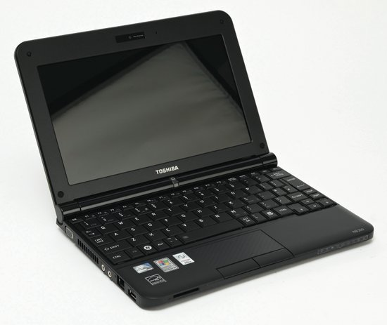
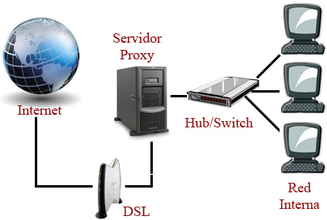

Els inicis d’educat 1×1

Els inicis
Dades generals
A hora d’ara ja es coneixen una mica concretament les característiques de tot el projecte que ja va essent hora ja que en encara no un mes estarà en funcionament. En centraré una mica és amb els components i parts i el que jo hi veig a faltar.
– 1 miniordinador per alumne. Toshiba NB200
– 1 miniordinador per professor. Toshiba NB200
– Connexió via wifi. Una connexió de 3 Mbits per aula.
– Proxy. Per emmagatzemar les pàgines visitades i així no carregar la sortida ADSL del projecte.
Anem a entrar una mica més en detall amb aquests components:
Ordinador
Pantalla:
S’han decantat per una pantalla de 10,1”, perquè ens fem una idea més petit que un foli A4. Jo considero que és massa petita, per passar-hi masses hores, com seria d’esperar en un projecte com aquest, en que els llibres desapareixeran. La resposta des del projecte han sigut dues:
– Per treballar a casa: Que els pares comprin una pantalla més gran, que s’hi pot connectar. Però que ho facin un cop es tingui l’ordinador a casa.
– Per treballar a l’escola: Els alumnes principalment miraran la pissarra digital, per tant l’ús dels portàtils serà poc.
En aquests últim punt discrepo una mica, ja que si es fa això canviem l’eina però no la metodologia. Canviem el guix per una pantalla, crec què aquest projecte és un bon punt per canviar la metodologia i el professor sigui un guia, perquè l’alumne desenvolupi el seu coneixement al seu ritme, tot i què se li marqui una mica des del professor. Si seguim amb explicacions per tots seguirem com fins ara. El temps ho dirà.
Sistema operatiu:
Portaran un sistema dual, això vol dir dos sistemes operatius a triar. Windows XP amb microsoft Office, i una Linkat(Una dstribució linux, amb tot el programari lliure).
Els alumnes triaran l’arrencada, no dubtarem que la majoria farà servir Windows, en lloc parla d’antivirus, per tant pot ser una despesa més per part dels alumnes. Qui controlarà que utilitzin programari amb llicències?
Sistema de restauració Si hi ha algun problema els tornarà tal com estaven el dia de compra, o això es el desitjable, diuen que hi haurà un combinació de tecles, o que en tot cas portaran un manual que ho explicarà.
Disc dur:
No pot ser d’estat sòlid, en aquest moments és massa car. Serà un disc dur que porta un sensor 3D, que aparca el capçal en cas de moviments sobtats.
Cost econòmic:
Per els alumnes hauran de pagar 150 € la família i 150 € la generalitat.
Als professors, els hi cedirà el centre mentre hi participin.
La responsabilitat de manteniment és de l’usuari mentre en gaudeixi.
Connexió a Internet
Wifi :
Les aules tindran un punt d’accés per aula, si es que no ho han canviat a última hora.
Els alumnes tindran un nom d’usuari i una contrasenya que es validaran via RADIUS, el que permetrà fer un seguiment/control de l’activitat dels alumnes.
El professorat, no ho se, enlloc posa com ho faran. 20 – 9 – 2009 Be els professors també disposaran d’un codi d’accés a la xarxa EDUCAT, que és com han anomenat a la xarxa wifi, amb activació per ràdius.
Velocitat :
Per el projecte es disposarà d’una línia de 3 MBbits per aula, en el nostre centre, com tindrem 4 aules tindrem una sola línia de telefònica de 12 MBits.
Amb això aconseguim no haver de fer un balanceig de línies, però seguim a disposició d’aquesta línia, que si mai falla el projecte es quedarà sense servei.
Això es una cosa que sobte, ja que la resta de centre per les activitats normals, han de compartir una línia ADSL, que en el millor dels casos arriba a 1,5 Mbits, i no s’ha aprofitat el projecte per millorar aquestes condicions, en tot cas s’ha aprofitat per empitjorar-les com explicaré més endavant.
Proxy

Es un dispositiu que emmagatzema les pàgines visitades i que quan es tornen demanar enlloc de tornar anar a internet a cercar-les doncs les subministra ell a la xarxa interna. Amb això es guanya velocitat i s’aprofita millor la connexió a internet.
També farà de filtre, això vol dir que tant sols deixarà anar a les pàgines que estan en una llista. La resta de pàgines les desviarà per la xarxa actual del centre.
Aquest filtratge de moment és preocupant:
-Aquesta última frase es terrible, ja que de moment no s’ha especificat que desviarà, ja que ens podem trobar amb laminilínia, (una desena part de la destinada al projecte) que tenen els centres ara, saturada, amb missatgeria, p2p, … i haver, des del centre, cercar solucions a un problema creat per el projecte que no en voldran saber res.
Diuen que és provisional, i què és solucionarà, però això fa molts anys que els centres reclamen i no ha tingut cap tipus de solució.
– A la llista, anomenada Blanca sobta perquè no hi ha cap recurs de la XTEC (edu365, phobos, agora, …), ni del MEC.
– Diuen que es pot canviar la llista si es demana a: sau.educacio@gencat.cat amb còpia a imae@fcri.cat.